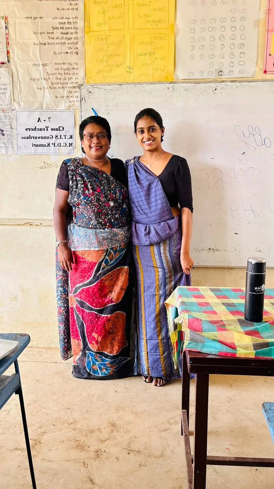
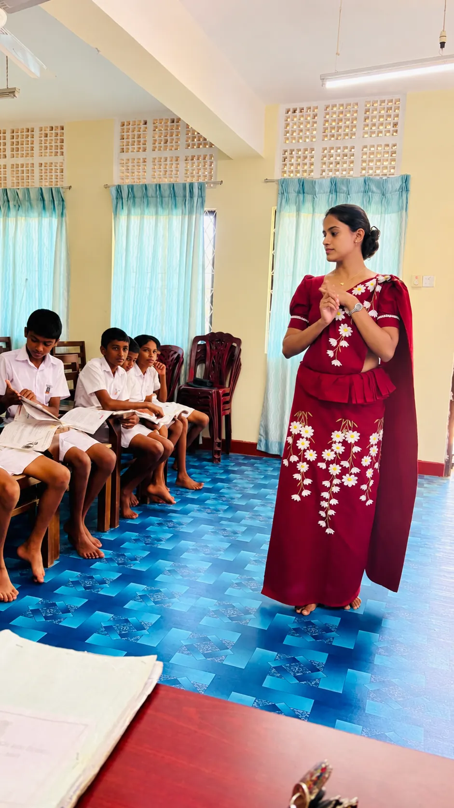

Click Download to view observation forms
My first formal teaching observation was conducted on 16 September 2026. At that stage of the internship, I was still adjusting to the realities of classroom teaching. The teacher-in-charge noted that my classroom management, rapport, use of materials and lesson preparation were generally effective. However, the observation also identified several areas that required further improvement, particularly time management, student talking time and the completion of all planned lesson stages within the available period. I was advised to simplify the lesson content, divide activities into manageable parts and create more opportunities for students to participate actively. This feedback was very useful because it helped me recognise that an effective lesson is not only about preparing many activities, but also about selecting the most appropriate ones and managing the available time carefully.
The second observation, conducted on 7 October 2026, showed clear improvement in these areas. By this stage, I had become more confident in managing the class and more aware of how to balance teacher input with learner participation. The teacher-in-charge described the classroom management as excellent, noted that students were well controlled and engaged, and highlighted the good balance between teacher and student talking time. The observation also specifically recognised good time management throughout the lesson, together with effective monitoring, positive feedback and strong rapport with the students. My overall observation score improved from 8/10 in September to 9/10 in October, showing that I was able to respond constructively to feedback and gradually develop a more organized, interactive and learner-centred classroom practice.

